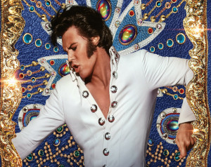

House of the Dragon estreia em 21 de agosto de 2022 na HBO Max.
A série é baseada no livro Fogo & Sangue, também de George R. R. Martin, com foco na família Targaryen e acontecendo centenas de anos antes de Game of Thrones.
A Casa do Dragão se passa na época em que Aegon, o Conquistador, uniu os sete reinos de Westeros.
Os apoiadores de Aegon Targaryen entram em conflito com os de sua meia-irmã, Rhaenyra, pelo trono de Viserys I, seu falecido pai, iniciando uma guerra civil cerca de 300 anos antes dos eventos retratados em "Game of Thrones".
Ler mais

Será que a Academia dará uma chance para Austin Butler?
O filme biográfico 'Elvis' colocou Austin Butler na trilha do sucesso e do Oscar.
O ator trouxe toda a euforia que só Elvis conseguia causar em um público, saindo da tela e saltando aos nossos olhos. Um dos grandes méritos de Luhrmann é trazer essa emoção: o diretor sabe muito bem como provocar reações do público – e essa é a magia do cinema.
Ler mais
'Não Se Preocupe, Querida'
O filme 'Não Se Preocupe, Querida' está previsto para estreiar ainda no segundo semestre de 2022.
Trata-se de thriller psicológico dirigido por Olivia Wilde e estrelado por Florence Pugh e Harry Styles.
Ambientada na década de 1950, a intensa trama segue Alice (Florence Pugh), uma dona de casa que reside com Jack (Harry Styles), seu marido, em uma comunidade idealista no deserto da Califórnia. Com o passar do tempo, ela descobre um fato que a deixará muito incomodada sobre sua suposta vida perfeita, chegando a acreditar que está enlouquecendo.
Ler mais